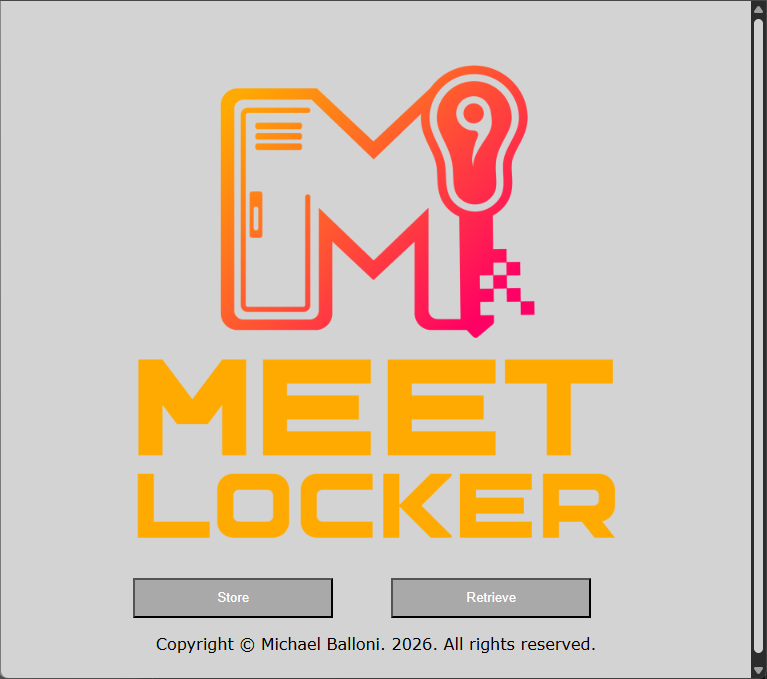
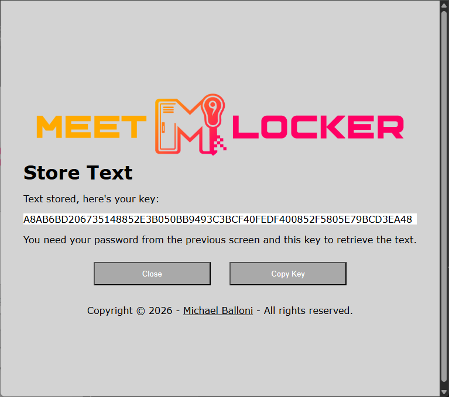
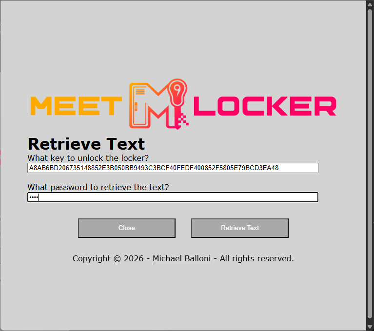
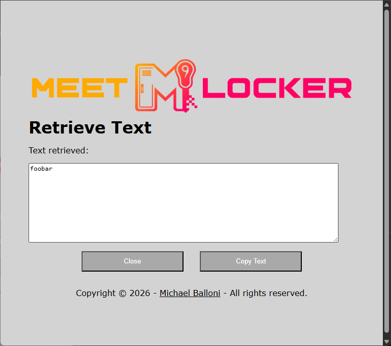

Meet Locker
Meet Locker is an application that allows users to securely store and retrieve data.

Press the Store button and you get the screen to enter the data and password:

Server API code for receiving text and password and returning key:
public class PutForm
{
public string? pwd { get; set; }
public string? filename { get; set; }
public string? text { get; set; }
}
[HttpPost("put")]
public async Task> Put([FromForm] PutForm form)
{
string? key;
using (var text_stream = new MemoryStream(Encoding.UTF8.GetBytes(form.text ?? "")))
key = await Mgr.Store(form.pwd ?? "", form.filename ?? "filename", text_stream);
return Ok(key);
} Server (Mgr) backend code for processing text and password into key:
public static async Task<string?> Store(string pwd, string filename, Stream file)
{
string key = GetKey();
string? zip_file_path = GetFilePath(key, pwd);
if (zip_file_path == null)
return null;
using (Stream zip_file = File.Create(zip_file_path))
{
using (ZipOutputStream zip_file_stream = new ZipOutputStream(zip_file))
{
var entry = new ZipEntry(filename);
zip_file_stream.PutNextEntry(entry);
zip_file_stream.Password = pwd;
await file.CopyToAsync(zip_file_stream);
}
}
return key;
}
// Given key and password return where the file might be found
public static string? GetFilePath(string key, string pwd)
{
if (!IsKeyValid(key))
return null;
string total_key_pwd = Convert.ToHexString(Encoding.UTF8.GetBytes(key + pwd));
int chars_per = 16;
StringBuilder file_path_builder = new StringBuilder(total_key_pwd.Length * 2);
file_path_builder.Append(FilesDirPath);
file_path_builder.Append('/');
var view = total_key_pwd.AsSpan();
for (int x = 0; x < total_key_pwd.Length; x += chars_per)
{
file_path_builder.Append(view.Slice(start: x, length: Math.Min(total_key_pwd.Length - x, chars_per)));
file_path_builder.Append('/');
}
string file_path = file_path_builder.ToString();
Directory.CreateDirectory(file_path);
file_path += "file.dat";
return file_path;
}
// Key generation centralized to make a DemoKey for length validation
public static string GetKey()
{
// build the key to the castle with a GUID for uniqueness and randomness for difficulty in guess
byte[] guid_bytes = Guid.NewGuid().ToByteArray();
string key =
Convert.ToHexString(guid_bytes) +
Convert.ToHexString(RandomNumberGenerator.GetBytes(guid_bytes.Length));
return key;
}
public static string DemoKey = GetKey();
public static bool IsKeyValid(string key)
{
if (key.Length != DemoKey.Length)
return false;
if (key.Any(c => !char.IsAsciiLetterOrDigit(c)))
return false;
return true;
}You receive the key needed to get the data back:

Someone gets the key and password and presses the Retrieve button on the home page to enter them:

Server API code for receiving key and password and returning text:
public class GetForm
{
public string? key { get; set; }
public string? pwd { get; set; }
}
[HttpPost("get")]
public async Task<ActionResult> Get([FromForm] GetForm form)
{
FileRetrieveHandler handler = Stream (string filename) => {
return Response.Body;
};
if (!await Mgr.Retrieve(form.key ?? "", form.pwd ?? "", handler))
return BadRequest();
return new EmptyResult();
}Server (Mgr) backend code for processing key and password into text:
// Given key and password, call a handler with the filename (for setting HTTP Content-Disposition).
// The handler returns the Stream to write the file contents to.
public static async Task<bool> Retrieve(string key, string pwd, FileRetrieveHandler handler)
{
string file_path = GetFilePath(key, pwd);
if (!File.Exists(file_path))
return false;
using (Stream file_stream = File.OpenRead(file_path))
{
using (ZipFile zip_file = new ZipFile(file_stream))
{
zip_file.Password = pwd;
string filename = "";
foreach (ZipEntry entry in zip_file)
{
filename = entry.Name;
break;
}
if (string.IsNullOrWhiteSpace(filename))
throw new Exception("Filename not found");
using (var zip_stream = zip_file.GetInputStream(0))
{
var output_stream = handler(filename);
await zip_stream.CopyToAsync(output_stream);
output_stream.Dispose();
}
}
}
File.Delete(file_path);
return true;
}They receive the data:

The server deletes the locker, and the deed is done.
Notes
This is a proof-of-concept demonstrating the code involved with doing something like this.
The application is a self-contained portable ASP.NET Core Web API Kestrel program.
The application is distributed via source code at GitHub.
There is no "live" version of this application. It's a source code demonstration. I hope for derivative work that goes live with something along these lines.
Send questions and comments to Michael Balloni michael@michaelballoni.com.
Check out more of Michael's shenanigans at michaelballoni.com.
Enjoy!
Copyright © 2026 - Michael Balloni - All rights reserved.